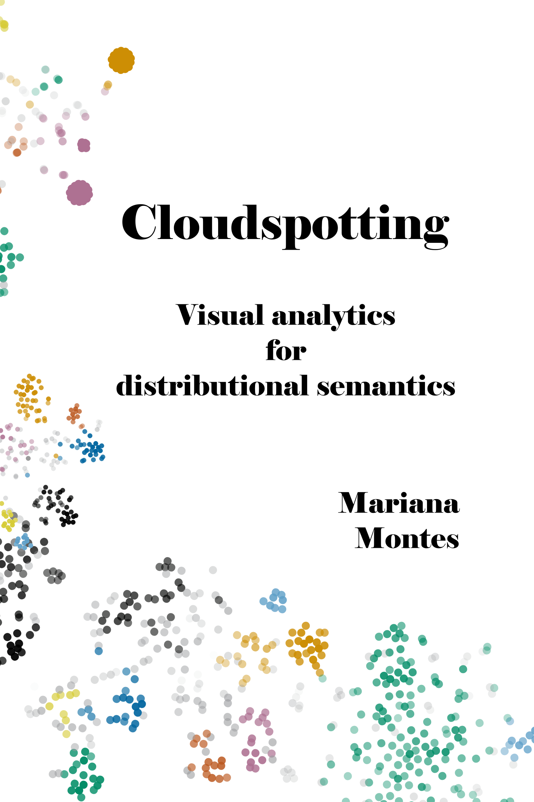

Preface
 The research described in this dissertation is part of the Nephological Semantics research project at the qlvl research group in KU Leuven, which aims to develop tools for large-scale corpus-based semantic analysis. A core aspect of the project involves representing semantic structure with distributional models, a computational tool that currently requires a deeper understanding of its inner workings and how its results relate to cognitive theories of meaning.
Context-counting distributional models represent words1 as vectors of co-occurrence frequencies in a multidimensional space (Turney & Pantel 2010; Lenci 2018). Basically, a word is represented by its association strength to other words. They can be generated at both type and token level (Heylen, Speelman & Geeraerts 2012; Heylen et al. 2015; De Pascale 2019). At type level, two words are represented as more similar if they are attracted to the same contextual features (e.g. other words) and repelled by the same contextual features. This should allow us to identify semantic fields and other relationships between words, but collapses the full range of contexts of each word into one representation. At token level, instead, we look at individual occurrences and define them as more similar if the words in their contexts are attracted to and repelled by the same contextual features. This way we should be able to map the internal variation of the behaviour of individual words, i.e. their semasiological structure.
Within the larger Nephological Semantics project, this particular work package is dedicated to the understanding of token-level distributional models as a tool for the study of polysemy. Concretely, I explored a number of parameter settings for the models (i.e. ways of defining the context used to represent each token) and their impact on the resulting representation, by means of visual analytics. Manually annotated sense tags were used as a heuristic, but without considering them a golden standard. Instead, the aim was to map parameter settings to various semantic phenomena coded in the annotations, such as meaning granularity (e.g. distinguishing homonyms and senses within the homonyms). The distributional models, which take the form of large matrices, can be reduced to two dimensions via different methods, such as t-sne (van der Maaten & Hinton 2008; van der Maaten 2014). These coordinates can then be mapped onto a scatterplot, resulting in a variety of shapes, which we call clouds.
The workflow was applied to a set of 32 Dutch nouns, verbs and adjectives exhibiting a range of semantic phenomena. For each of them, 240-320 concordance lines were extracted from a corpus of Dutch and Flemish newspapers, annotated and modelled. The combination of parameter settings, some of which included syntactic information, resulted in 200-212 different models per lemma. The models were clustered with Partition Around Medoids (Kaufman & Rousseeuw 1990; Maechler et al. 2021) so that a manageable, representative set could be explored in more depth, in particular visualizing their t-sne representations.
The contributions of this dissertation are twofold. On the one hand, the exploration of the possibilities and limits of distributional models to lexicological research resulted in warnings, suggestions and guidelines for practical studies. In other words, it offers an assessment and interpretation of distributional models from the perspective of descriptive linguistics. On the other hand, it presents a visualization tool designed for the exploration of token-level distributional models from such a perspective (Montes & QLVL 2021). Its interactive quality makes it challenging to describe it adequately in a printed text, so I would strongly recommend visiting it in its virtual home and explore it.
This is the web-based version of my dissertation, where I plan to fix typos and add some notes/disclaimers. You can find the original, submitted and approved pdf version here.
To cite this work, you can use the following bibtex:
@phdthesis{montes_2021,
type = {{{PhD Dissertation}}},
title = {Cloudspotting: Visual Analytics for Distributional Semantics},
author = {Montes, Mariana},
year = {2021},
address = {{Leuven}},
abstract = {This PhD study belongs to WP1 of the KU Leuven C1 research programme 'Nephological Semantics', (PI Dirk Geeraerts) which explores the use of distributional semantic methods for linguistic semantics. Specifically, the study aims at a realistic assessment of the possibilities and limitations of vector space semantics and word embeddings. The project will take the form of a number of case studies comparing polysemy analyses under three methods: a definitional lexicographical analysis, a 'behavioral profile' approach, and a semantic vector space approach. In general, the methodological goal of WP1 is to bring together a number of distributional methods that were developed in different contexts, and to refine, complement and systematize them, in order to turn them into an overarching, methodologically unified toolset in support of the analysis of various types of interplay between onomasiological, semasiological, and lectal variation. For validation and descriptive purposes, the methods are applied in case studies on English and Dutch lexical items.},
collaborator = {Geeraerts, Dirk and Speelman, Dirk and Szmrecsanyi, Benedikt},
copyright = {All rights reserved},
langid = {english},
school = {KU Leuven}
}